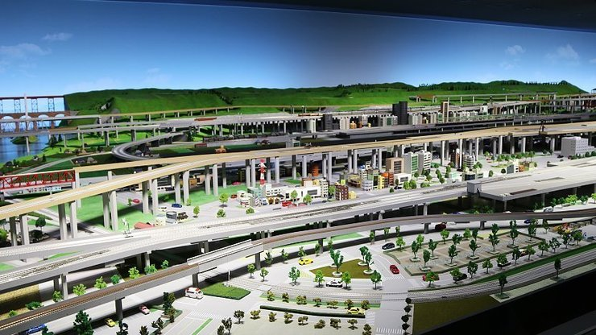

Kyoto Railway Museum
The Kyoto Railway Museum was opened in 2016 by JR West on the former site of the Umekoji Train and Locomotive Museum, about a twenty minute walk west of Kyoto Station. It is one of Japan's three great railway museums alongside JR East's Railway Museum in Saitama and JR Central's SCMAGLEV and Railway Park in Nagoya.
Covering three floors on a 30,000 square meter site, the museum exhibits over 50 retired trains, from steam locomotives to more recent electric trains and shinkansen. Visitors can also walk underneath and observe the inner workings of a retired freight locomotive.
The museum displays railway uniforms, tools and an abundance of other appurtenances from past eras and boasts one of Japan's largest dioramas, in which miniature trains are controlled single-handedly by a skilled operator. There are also a variety of interactive exhibitions where visitors can perform the duties of a train conductor or drive a train simulator. The museum's restaurant is on the second floor directly below an observation deck. Both offer nice views of the passing trains along the JR Kyoto Line and Tokaido Shinkansen.
Next to the main building lies a roundhouse with turntable from 1914. The roundhouse showcases Japan's largest collection of well-preserved steam locomotives. Visitors can also observe real time through windows as trains are worked on in a maintenance hall built exclusively for steam locomotives. For an additional fee of 300 yen, patrons can take a one kilometer journey on a train powered by a steam locomotive that lasts around ten minutes.
At the museum's exit stands the Nijo Station Building, a picturesque, old-fashioned building relocated from nearby Nijo Station in 1997. The building was originally erected in 1904, making it the oldest of its kind in Japan and redolent of a bygone era before the widespread incorporation of concrete into train station construction.